Primera temporada
La primera temporada de Supernatural constó de 22 episodios y estrenó el 13 de septiembre de 2005 en The WB, para luego culminar el 4 de mayo de 2006. Sus primeros 16 episodios fueron transmitidos los martes a las 9:00 p. m. y los restantes los jueves a la misma hora. La trama se remonta 22 años antes, cuando una noche, Mary Winchester es asesinada y quemada en su propia casa, hecho que provoca que su esposo John Winchester se embarque en un interminable viaje en busca de respuestas. A 22 años del incidente, Sam Winchester vive junto a su novia Jessica en Stanford, California, hasta que un día, su hermano mayor Dean Winchester, lo visita y le explica que su padre está en un «viaje de caza» y hace días que no se sabe nada de él. Ambos van en busca de su padre, y en el camino se encuentran diversos casos de muertes inexplicables, así que eventualmente se detienen en algunos pueblos para salvar personas y combatir wendigos, fantasmas y otras criaturas. Con el tiempo, Sam empieza a desarrollar habilidades psíquicas y comienza a tener visiones extrañas. Finalmente, ambos encuentran a su padre, quien les explica que lo que mató a su madre fue un demonio llamado Azazel (apodado «Demonio de los ojos amarillos»), que solo puede ser matado por una pistola llamada «la Colt», la cual fue fabricada por Samuel Colt específicamente para matar cualquier criatura sobrenatural. Los tres se las arreglan para conseguir dicha arma y se enfrentan a Azazel, pero este posee el cuerpo de John, y si Sam llega a dispararle, mataría a ambos, por lo que finalmente se rehúsa a hacerlo y finalmente Azazel escapa. Tras la anécdota, los tres sufren un terrible accidente donde son atropellados por un camión en medio de la nada.
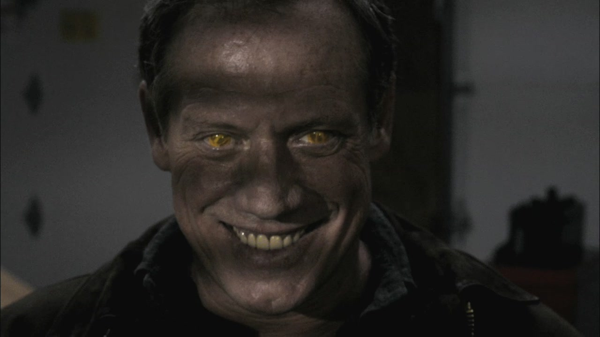Segunda temporada
La segunda temporada de Supernatural constó de 22 episodios y estrenó el 28 de septiembre de 2006 en The CW, para luego culminar el 17 de mayo de 2007. Todos sus episodios se emitieron los jueves a las 9:00 p. m. Después de lo ocurrido en el final de la primera temporada, John, Sam y Dean son llevados de emergencia a un hospital, con John y Sam teniendo heridas menores. Sin embargo, Dean se encuentra en estado de coma y tiene un encuentro cercano con la muerte, así que John realiza un trato con Azazel en el que este intercambia la vida de ambos. Por tanto, Dean es devuelto a la vida, solo para descubrir que su padre murió para salvarlo. Por ello, Sam y Dean se embarcan de nuevo en la búsqueda de Azazel, y en el camino tienen que pedir ayuda a otros cazadores como Bobby, Elle, Jo y Ash. Eventualmente, Azazel reaparece y reúne en un pueblo abandonado a Sam y a otros jóvenes con poderes similares. Azazel explica que el motivo de esto era que todos se mataran entre sí para determinar quién era el más fuerte y que el ganador se convierta en el nuevo líder de su ejército de demonios. Dean y Bobby se proponen ir a rescatar a Sam, pero este es asesinado cuando ambos llegan. Devastado por la muerte de su hermano, Dean realiza un trato con un demonio para que lo traiga de vuelta, pero en lugar de dejarle 10 años de vida como es común, el demonio le da un año de vida. Tras la resurrección de Sam, todos van en busca de Azazel, quien acaba de abrir las puertas del infierno, provocando que una gran cantidad de demonios escape. Entre las almas que escaparon está John, quien ayuda a detener a Azazel y finalmente Dean consigue matarlo.
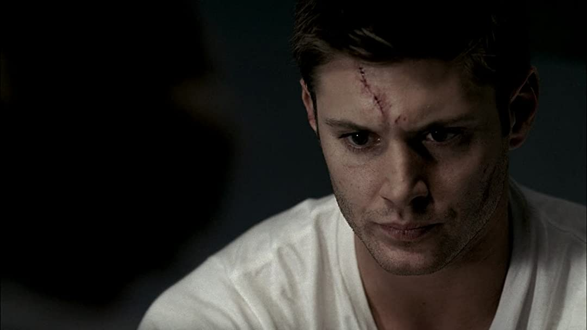Tercera temporada
La tercera temporada de Supernatural constó de 16 episodios y estrenó el 4 de octubre de 2007 por The CW, para luego culminar el 15 de mayo de 2008. Todos sus episodios se emitieron los jueves a las 9:00 p. m. Originalmente, la temporada iba a tener 22 episodios al igual que las dos anteriores, pero la producción se vio detenida por la huelga de guionistas en Hollywood de 2007-2008, y solo se habían escrito 12 episodios para entonces, lo que llevó a que la serie sufriera un paro de un mes. Cuando la huelga concluyó, solo había tiempo suficiente para realizar 4 episodios más. Tras los acontecimientos de la segunda temporada, Sam y Dean recorren los Estados Unidos cazando a todos los demonios que se liberaron durante la batalla con Azazel, y al mismo tiempo, buscan alguna manera de evitar la inminente muerte de Dean. En el camino, conocen a Ruby, una demonio que se interesa por Sam y decide ayudarlo a encontrar una salvación para Dean. Asimismo, conocen a Bela Talbot, una mercenaria que los ayuda en ocasiones vendiéndoles objetos poderosos y dándoles ubicaciones de ciertas personas. Gracias a ella, ambos descubren que el demonio que tiene el contrato de Dean se llama Lilith, y es en realidad, el primer demonio jamás creado. Con ayuda de Ruby, ambos encuentran a Lilith y se disponen a matarla, pero los poderes de Sam aún no son lo bastante fuertes como para hacerle frente, y finalmente el contrato de Dean caduca y este es arrastrado al infierno.
Cuarta Temporada
La cuarta temporada de Supernatural constó de 22 episodios y estrenó el 18 de septiembre de 2008 en The CW, para luego culminar el 14 de mayo de 2009. Todos sus episodios se emitieron los jueves a las 9:00 p. m. Luego de lo acontecido en la tercera temporada, Dean es traído de vuelta a la vida por un ángel llamado Castiel, quien se alía con él y Sam para detener a Lilith de romper los «66 sellos», una serie de pruebas que liberarían a Lucifer de su jaula en el infierno. Finalmente, ambos contactan a Ruby para que les dé pistas sobre la locación de Lilith. Sin embargo, la relación entre Sam y Dean comienza a complicarse por la falta de confianza entre ambos, dado que Sam se obsesiona con beber sangre de demonio para fortalecer sus poderes, hecho que además provoca que se vuelva menos humano. En un intento por salvarlo, Dean contacta a los ángeles, pero estos lo retienen argumentando que en realidad, ellos quieren que el Apocalipsis ocurra, ya que así el paraíso será «reconstruido». Con ayuda de Castiel, Dean consigue escapar e intenta advertirle a Sam que Lilith es el último sello, y si la mata, Lucifer será libre. No obstante, Ruby detiene a Dean y una vez que Sam asesina a Lilith, revela sus verdaderas intenciones. Sam y Dean consiguen asesinarla, pero el ascenso de Lucifer es inminente.
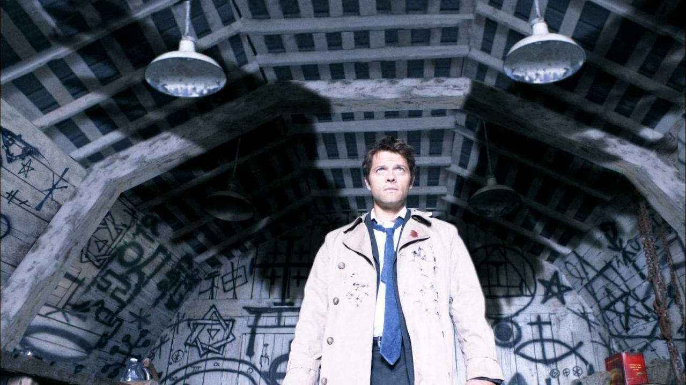Quinta Temporada
La quinta temporada de Supernatural constó de 22 episodios y estrenó el 10 de septiembre de 2009 en The CW, para luego culminar el 13 de mayo de 2010. Todos sus episodios se emitieron los jueves a las 9:00 p. m.17 Originalmente, esta sería la última temporada, pues el creador de la serie, Eric Kripke, había afirmado que esta constaría solo de cinco temporadas.2 Sin embargo, The CW la renovó para otra entrega, aunque Kripke abandonó el proyecto. Con Lucifer libre, da inicio el Apocalipsis y el único capaz de detenerlo además de Dios, es el Arcángel Miguel, quien, al igual que Lucifer, no puede utilizar todo su poder puesto que no hay recipiente humano lo bastante poderoso que lo soporte. Eventualmente se revela que el recipiente ideal de Lucifer es Sam, mientras que el de Miguel es Dean. Sin embargo, al ser Lucifer y Miguel seres celestiales, deben pedir permiso para ocupar sus cuerpos, pero tanto Sam como Dean se niegan. A lo largo de la trama, ambos intentan matar a Lucifer por otros medios, pero fracasan y pierden algunos aliados como Jo y Ellen en el intento. Además, Zachariah y el Arcángel Gabriel les dan caza para forzarlos a aceptar su destino. Con ayuda de Crowley, Sam y Dean matan a tres de los cuatro Jinetes del Apocalipsis, cuyos anillos son la llave para abrir la prisión de Lucifer. Cansados de tratar de convencer a Dean, los ángeles recurren a Adam, medio hermano de Sam y Dean, que al ser descendiente de John Winchester, también es apto para ser el recipiente de Miguel, y este acepta tras hacer un trato. Así, Sam y Dean llegan a un acuerdo; Sam aceptará ser el recipiente de Lucifer para que por fin ambos lo envíen de vuelta al infierno, con la condición de que Dean no intente traerlo de vuelta. Finalmente, Lucifer (en el cuerpo de Sam) y Miguel (en el cuerpo de Adam) se encuentran y tiene lugar la batalla final. No obstante, Sam recupera control de su cuerpo y con la prisión de Lucifer abierta, se lanza sin más junto a Adam, dejándolos a ambos atrapados y acabando con el Apocalipsis. Sin oportunidad de traer de vuelta a su hermano, Dean deja de cazar y empieza a vivir una vida normal, pero, misteriosamente, Sam aparece con vida fuera de la prisión de Lucifer.
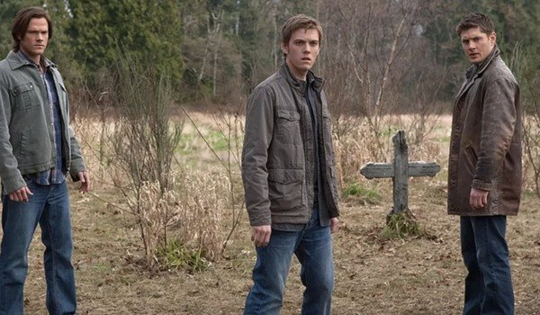Sexta Temporada
La sexta temporada de Supernatural constó de 22 episodios y estrenó el 24 de septiembre de 2010 en The CW, para luego culminar el 20 de mayo de 2011. Todos sus episodios se emitieron los viernes a las 9:00 p. m. Con Eric Kripke habiendo abandonado el proyecto, Sera Gamble ocupó su lugar como show runner. Un año después de lo ocurrido en el final de la quinta temporada, Dean vive una vida normal, hasta que un día Sam recurre a él, y Dean se ve forzado a abandonar a su familia dado que le será imposible protegerlos mientras está cazando con Sam, sus primos y su resucitado abuelo, Samuel. Mientras tanto, Castiel se encuentra en el Paraíso librando una batalla con el Arcángel Rafael, quien quiere iniciar de nuevo el Apocalipsis. Posteriormente, Dean comienza a notar que Sam ya no es el mismo, y ambos descubren que fue Crowley quien lo revivió, pero se quedó con su alma en el proceso. Por ello, Dean contacta a diversos seres para devolver a Sam a la normalidad, hasta que la Muerte lo ayuda y bloquea los recuerdos de Sam del infierno. Por otra parte, Castiel y Crowley comienzan a trabajar juntos para abrir las puertas del Purgatorio y robar las almas que allí habitan. Finalmente ambos lo consiguen, pero Castiel traiciona a Crowley y se queda con todas las almas, las cuales le otorgan un poder inmenso, con el que consigue derrotar a Rafael y se proclama como el «nuevo Dios».
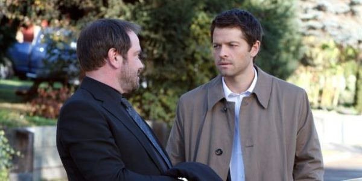Septima Temporada
La séptima temporada de Supernatural constó de 23 episodios y estrenó el 23 de septiembre de 2011 en The CW, para luego culminar el 18 de mayo de 2012. Todos los episodios se emitieron los viernes a las 9:00 p. m. Fue la primera temporada en tener 23 episodios y la última en contar con Sera Gamble como show runner. Después de proclamarse el «nuevo Dios» en el final de la sexta temporada, Castiel comienza a debilitarse por efecto de las almas malignas que absorbió, incluyendo los Leviatanes, criaturas sumamente poderosas creadas por Dios que fueron encerradas en el Purgatorio por ser demasiado peligrosas. Dean convence a Castiel de devolver las almas al Purgatorio, y con ayuda de Sam y Bobby, lo logran a medias, pero los Leviatanes toman control del cuerpo de Castiel y se esparcen por los Estados Unidos. Uno de los liberados, Dick Roman, comienza un plan para convertir a los Leviatanes en la especie dominante del planeta a través de la venta de un alimento que matará a todo humano que suponga una amenaza para ellos. Con ayuda de Kevin, un profeta, Sam y Dean consiguen crear un arma que transportará a los Leviatanes de vuelta al Purgatorio. En el proceso, consiguen enviar a algunos, además de matar a Dick Roman, pero Dean y Castiel son enviados al Purgatorio también.
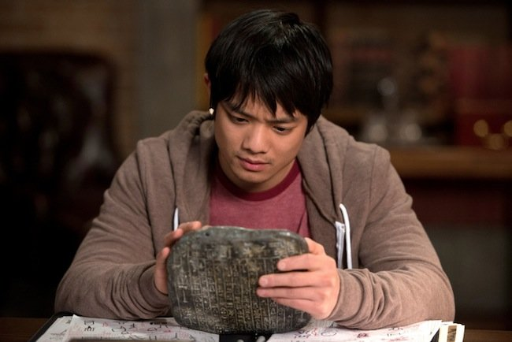Octava Temporada
La octava temporada de Supernatural constó de 23 episodios y estrenó el 3 de octubre de 2012 en The CW, para luego culminar el 15 de mayo de 2013. Todos los episodios se emitieron los miércoles a las 9:00 p. m. Fue la primera temporada en contar con Jeremy Carver como show runner tras la partida de Sera Gamble. Un año después de haber quedado atrapado en el Purgatorio junto con Castiel, Dean finalmente consigue escapar, pero no acompañado de Castiel, sino de un vampiro llamado Benny. Posteriormente, Dean se reencuentra con Sam, y ambos descubren eventualmente que existen unas tablas que revelan la manera de cerrar definitivamente las puertas del infierno, siendo ayudados por Metatron, un escriba de Dios. Al saber esto, Crowley también comienza a buscar las tablas y a dar caza a Kevin, quien es el único capaz de leerlas. Por otra parte, Castiel es rescatado del Purgatorio por los ángeles y se le asigna resguardar la tabla de los ángeles. Mientras avanza la trama, Sam y Dean se enfocan en completar las tres pruebas que son necesarias para cerrar las puertas del infierno; matar a un cerbero y bañarse en su sangre, rescatar un alma inocente del infierno y enviarla al paraíso y curar a un demonio. Sam consigue completar las tres pruebas, pero para poder cerrar las puertas, tendrá que morir, y Dean evita que lo haga. En otro plano, Metatron traiciona a Castiel y le roba su gracia, convirtiéndolo en humano, y con ello realiza un hechizo que destruye el paraíso y provoca que todos los ángeles caigan del cielo.
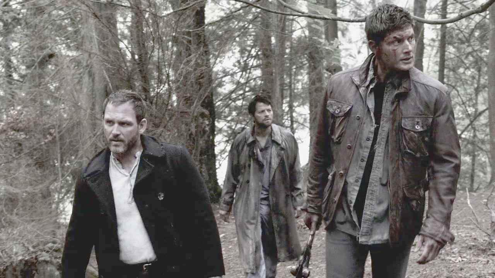Novena Temporada
La novena temporada de Supernatural constó de 23 episodios y estrenó el 8 de octubre de 2013 en The CW, para luego culminar el 20 de mayo de 2014. Todos los episodios se emitieron los martes a las 9:00 p. m. Tras haber completado las tres pruebas, Sam está al borde de la muerte, así que Dean hace un acuerdo con un ángel llamado Ezekiel para que posea su cuerpo y lo sane desde el interior sin que este lo sepa. Mientras tanto, Sam, Dean y Kevin intentan buscar la manera de regresar a los ángeles al cielo, pero Ezekiel, quien resulta ser Gadreel, el ángel que falló en su misión de proteger Edén de Lucifer, se alía con Metatron y mata a Kevin. Tras el suceso, Dean pide ayuda a Crowley para sacar a Ezekiel del cuerpo de Sam, a cambio de ayudarlo luego a matar a Abaddon, una poderosa demonio que quiere ocupar su lugar como rey del infierno. Por ello, ambos van en busca de Caín, el primogénito de Adán y Eva, quien tiene un arma lo bastante poderosa para matar a Abaddon, pero para que esta funcione, el portador debe llevar la Marca de Caín, un sello de Dios que provoca la necesidad de matar. A pesar de esto, Dean acepta las consecuencias y consigue matar a Abaddon, pero la marca comienza a tener gran influencia sobre él. Posteriormente, Gadreel se da cuenta del engaño de Metatron y se alía con Castiel para derrotarlo. Ambos se infiltran en el nuevo paraíso de Metatron y consiguen destruir la tabla que le otorga sus poderes, pero esto no evita que Metatron asesine a Dean. Tras destruir la tabla, Gadreel y Castiel quedan atrapados en el paraíso, pero Gadreel se sacrifica para que Castiel pueda culminar la misión. Finalmente, Castiel engaña a Metatron y lo encierra en la cárcel del paraíso. Sam le pide a Crowley que reviva a Dean, pero este en su lugar, se lleva su cuerpo y coloca de nuevo el arma de Caín en sus manos, y Dean revive como un demonio.
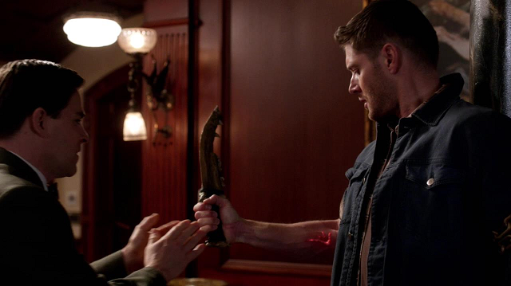Décima Temporada
La décima temporada de Supernatural constó de 23 episodios y estrenó el 7 de octubre de 2014 en The CW, para luego culminar el 20 de mayo de 2015. Los 14 primeros episodios fueron emitidos los martes a las 9:00 p. m., y el resto los miércoles a la misma hora. Ahora como un demonio, Dean tiene una buena relación con Crowley, y ambos viajan por los Estados Unidos causando estragos en algunos bares. Sam, que desconoce el estado de Dean, se dispone a buscarlo y finalmente lo encuentra, solo para descubrir que es un demonio. Dispuesto a ayudar a su hermano, Sam intenta sanar a Dean de la misma forma que ambos lo hicieron con Crowley cuando completaban las pruebas, pero esto funciona a medias. Eventualmente, Sam y Dean cazan algunas criaturas mientras buscan una manera de quitarle la Marca de Caín. Ambos descubren que existe un libro con un hechizo supuestamente capaz de remover la marca, llamado el Libro de los Malditos, que pertenece a la Familia Styne, y estos están empeñados en recuperarlo, pero finalmente fracasan. Con ayuda de Rowena, una bruja, que además es madre de Crowley, realizan el hechizo que quitará la marca, y este es exitoso, pero al borrar la marca, liberan a la oscuridad, la hermana de Dios.

Undécima Temporada
La undécima temporada de Supernatural constó de 23 episodios y estrenó el 7 de octubre de 2015 en The CW, para luego culminar el 25 de mayo de 2016. Todos los episodios se emitieron los miércoles a las 9:00 p. m. Esta fue la última temporada en tener a Jeremy Carver como show runner. Después de haber liberado a la oscuridad, también llamada Amara, esta posee el cuerpo de una bebé y es adoptada por Crowley, quien la empieza a criar. Posteriormente, Amara toma su forma adulta y comienza a crear caos por todo el mundo para hacer que Dios aparezca y así conseguir su venganza. Sam, Dean, Castiel, Crowley y Rowena viajan al infierno para pedir ayuda a Lucifer, quien es el único capaz de matar a Amara, pero para hacerlo, tiene que salir de su prisión y poseer el cuerpo de Sam, pero este se niega, y por el contrario, toma a Castiel. Finalmente, van en busca de las «Manos de Dios», objetos creados por Dios con poderes especiales que podrían ayudarlos a derrotar a Amara. Después de todo el desastre, Chuck, un supuesto profeta que se creía muerto, reaparece y revela su verdadera identidad, dejando ver que él es Dios. Con ello, Sam, Dean, Crowley, Rowena, Lucifer (en el cuerpo de Castiel) y Dios unen sus fuerzas para vencer a Amara, pero fracasan y Dios queda gravemente herido. Por ello, se rompe el equilibrio del mundo y el sol comienza a morir. Para poder salvar al planeta, deben morir Amara y Dios por igual, así que Sam, Dean, Crowley y Rowena crean una bomba con almas que podrá acabar con ambos. Dios envía a Dean con Amara para que utilice la bomba, pero antes, este logra convencerla de que la venganza no es la solución, así que Amara perdona a su hermano y lo sana. Tras el reencuentro, Amara y Dios se van juntos, y Amara, en agradecimiento a Dean, revive a su madre. En otro plano, una mujer secuestra a Sam.
Duodécima Temporada
La duodécima temporada de Supernatural constó de 23 episodios y estrenó el 13 de octubre de 2016 en The CW, para luego culminar el 18 de mayo de 2017. Sus primeros 8 episodios fueron emitidos los jueves a las 9:00 p. m., y el resto el mismo día a las 8:00 p. m., siendo la primera temporada de la serie en ser transmitida a la primera hora del horario estelar. Fue también la primera temporada en tener a Andrew Dabb y Robert Singer como show runners. Dean se reencuentra con Mary, pero esta no lo reconoce pues sus recuerdos de él son de cuando aún era un niño. Mientras tanto, Sam es interrogado por la mujer que lo secuestró, Lady Toni Bevell, quien resulta ser parte de los Hombres de Letras del Reino Unido. Con la ayuda de Castiel, Dean y Mary encuentran a Sam y lo rescatan. Tras el fracaso de Toni, otros Hombres de Letras, Mick y Ketch, intentan convencer a Sam y a Dean de confiar en ellos al ayudarlos en numerosas ocasiones. En otro plano, Crowley descubre que Lucifer escapó de su jaula y le empieza a dar caza. Sam, Dean, Crowley y Castiel se juntan para buscarlo, y eventualmente Lucifer se apodera del cuerpo del Presidente de los Estados Unidos. Con ayuda de un artefacto de los Hombres de Letras, Sam y Dean detienen a Lucifer, pero son enviados a una prisión de alta seguridad por intentar asesinar al presidente. Asimismo, Crowley encierra a Lucifer para usarlo como esclavo. Tras meses como reclusos, Sam y Dean consiguen escapar y ahora se enfocan en buscar a Kelly, la asistente del presidente que ahora está embarazada de Lucifer, quien además intenta escapar de Crowley para buscar a su hijo. Por otra parte, Mary comienza a trabajar con los Hombres de Letras a espaldas de Sam y Dean. Finalmente, estos revelan sus verdaderas intenciones y comienzan a asesinar a los cazadores estadounidenses, pero son detenidos por Sam, Dean y otros aliados. Con los Hombres de Letras erradicados, Sam, Dean y Castiel se enfocan en detener a Lucifer, quien escapó de la prisión de Crowley y ahora busca a su hijo. Finalmente, Crowley y Castiel se sacrifican para evitar que Lucifer consiga su objetivo, mientras Kelly da a luz a su hijo, que es encontrado por Sam y Dean.
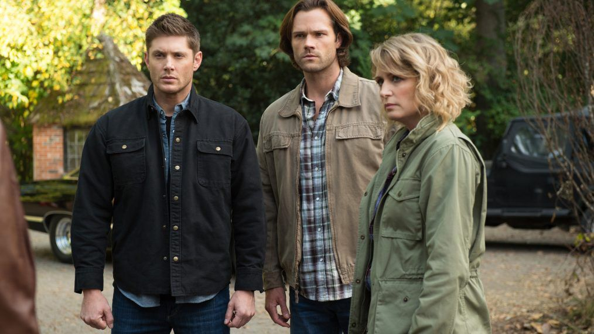Décimotercera Temporada
La decimotercera temporada de Supernatural constó de 23 episodios y estrenó el 12 de octubre de 2017 en The CW, para luego culminar el 17 de mayo de 2018. Todos sus episodios fueron transmitidos los jueves a las 8:00 p. m. El hijo de Lucifer, Jack, parece inseguro de sí mismo y del mundo, y va en buscar de su padre luego de que Dean intentara matarlo. Inconscientemente, Jack revive a Castiel y así Sam convence a Dean de que lo críen para evitar que se convierta en un ser malvado. En otra dimensión, Lucifer tiene retenida a Mary y la mantiene con vida para intercambiarla por su hijo una vez que se encuentre con los Winchester. Sin embargo, se encuentra con Miguel, quien en esta dimensión mató a su Lucifer. En otro plano, Ketch se encuentra trabajando con Asmodeos para convertirlo en el rey del infierno, así que ambos secuestran a Castiel y a un debilitado Lucifer que por suerte logró escapar de la otra dimensión. Tras varios intentos, Sam y Dean consiguen enviar a Jack a la otra dimensión para que rescate a Mary, mientras que Lucifer, luego de escapar de Ketch y Asmodeos, intenta tomar control del cielo. Viendo la guerra que se vive en la otra dimensión, Sam y Dean rescatan a varios cazadores al traerlos hasta su dimensión, pero Lucifer y el Miguel de la otra dimensión van tras ellos. Lucifer consigue hacerse con el poder de Jack y planea conquistar tanto el cielo como el infierno, pero Dean hace un trato con Miguel para que lo posea y así consiguen matar a Lucifer, pero Miguel no abandona el cuerpo de Dean y comienza su propia conquista.
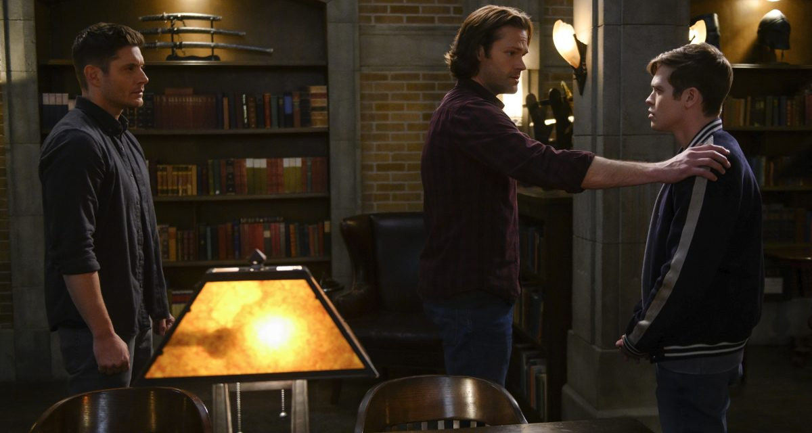Décimocuarta Temporada
La decimocuarta temporada de Supernatural constó de 20 episodios y estrenó el 11 de octubre de 2018 en The CW, para luego culminar el 25 de abril de 2019. Todos sus episodios fueron transmitidos los jueves a las 8:00 p. m. En las semanas desde su posesión de Dean, Miguel ha comenzado a visitar a varias personas para conocer sus deseos. Una de estas personas es el ángel Anael que ha regresado a la vida en la Tierra después de la partida de Lucifer del Cielo. Anael más tarde llama a Sam para advertirle de la alianza de Miguel con los vampiros. Sam es el líder de una nueva red de cazadores y se ejecuta harapiento en busca de Dean. Sam se entera por el antiguo contenedor de Lucifer, Nick, que sobrevivió a la muerte de Lucifer, que Miguel planea hacerse con el control del cielo y el infierno. En un intento de encontrar a Dean, Castiel se encuentra con el demonio Kip, que lo embosca con la esperanza de hacer un trato con Sam para convertirse en el nuevo rey del infierno. Después de una pelea masiva, Sam mata a Kip y deja claro a los demás demonios que no habrá más Reyes del Infierno. Los demonios entonces huyen con miedo. Jack muere repentinamente a causa de la pérdida de sus poderes y su alma queda deambulando. En un intento por traerlo de vuelta, Castiel intercambia su alma por la de Jack, pero se le deja ir con la condición de que tendrá que volver cuando encuentre la verdadera felicidad. Luego de perder posesión del cuerpo de Dean, Miguel masacra a varios cazadores de la otra dimensión. En otro plano, Nick, quien fue el recipiente de Lucifer por muchos años y está muy mal psicológicamente, intenta conseguir justicia para su familia al tratar de revivir a Lucifer usando los poderes de Jack, pero este se rehúsa y lo mata, y posteriormente mata también a Mary de forma accidental, haciendo que pierda su alma. Con Jack fuera de control, Sam y Dean contactan a Dios para curarlo, pero Dios les dice que la única solución es matándolo, a lo que los Winchester se rehúsan. Molesto por la arrogancia de ambos, Dios mata a Jack y decide acabar con el universo.
Décimoquinta Temporada
La decimoquinta temporada de Supernatural constó de 20 episodios y estrenó el 10 de octubre de 2019 en The CW, y culminó el 19 de noviembre de 2020. Sus primeros 11 episodios fueron transmitidos los jueves a las 8:00 p. m., y solo los episodios 12 y 13 se emitieron los lunes a la misma hora. Tras ello, la serie sufrió un parón indefinido por la detención de la producción a causa de la pandemia de COVID-19, y The CW afirmó que no emitirían más episodios hasta que se retomara la producción. Hacia mediados de 2020, la serie volvió a su producción y el último episodio fue grabado el 10 de septiembre de 2020. Los últimos siete episodios comenzaron a ser emitidos el 8 de octubre de 2020 los jueves a las 8:00 p. m. para concluir la serie definitivamente el 19 de noviembre del mismo año. Luego de que Dios se propusiera a acabar con todo el universo, Sam, Dean y Castiel deciden que Dios debe morir, pero no encuentran la manera. Poco a poco presencian cómo todas las dimensiones van desapareciendo, y con ello, los cazadores que habían rescatado. Billie, quien es ahora aliada del vacío en secreto, revive a Jack para que los ayude en su misión. Billie inicia un plan en el que Jack será sobrecargado con energía cósmica para convertirlo en una especie de bomba para acabar con Dios, pero esto lo matará en el intento. Mientras preparan el plan, se dan cuenta de que si matan a Dios, habrá un desbalance que también acabaría con el mundo, por lo que tendrán que matar a Amara al mismo tiempo. Dean logra convencer a Amara de ayudarlos mintiéndole, y antes de que puedan ejecutar el plan, Dios convence a Amara de unirse a su bando y así logra burlar los esfuerzos de los Winchester. Billie envía a Jack al vacío para que sobreviva la detonación, lo cual causa una ira en el vacío. Poco después se revela que la verdadera intención de Billie es ocupar el lugar de Dios, así que Dean y Castiel terminan su alianza, pero Billie está empeñada en asesinarlos. Castiel, en un intento por salvar a Dean, encuentra su verdadera felicidad al revelarle su amor, por lo que el vacío reclama el acuerdo que habían hecho antes y se lo lleva, arrastrando a Billie en el acto y salvando a Dean. Sin embargo, ahora Sam, Dean y Jack se encuentran solos en el mundo luego de que Dios acabara con todas las dimensiones. Desesperados, los Winchester y Jack consiguen aliarse con Miguel e intentan hacer frente a Dios, pero Miguel los traiciona y Dios, tras matar a Miguel, los golpea hasta casi matarlos, pero antes de poder acabar con ellos, Jack lo detiene, para sorpresa de Dios. En ello, Sam y Dean explican que Jack adquirió la habilidad de absorber poder luego de su último intento por matar a Dios, y, sabiendo que Miguel los traicionaría, hicieron que Dios los golpeara a propósito, lo cual cargó a Jack con sus poderes. Así, Jack absorbe los poderes de Dios volviéndolo mortal y se convierte en el nuevo Dios del mundo. Jack revive a todos los caídos y consigue crear un nuevo paraíso, dejando a Sam y Dean continuar con sus vidas. Tras varias semanas disfrutando sus vidas, Sam y Dean se van de caza y se encuentran con un nido de vampiros que secuestra niños para criarlos y alimentarse de ellos. Ambos consiguen rescatar a los niños y acabar con el nido, pero en la pelea Dean es atravesado por un fierro y se da cuenta de que no se podrá salvar. Antes de morir, le pide a Sam que siga con su vida y no intente revivirlo como lo ha hecho antes, a lo que Sam acepta tras negarse en primera instancia. De este modo, Dean llega al nuevo paraíso creado por Jack, donde se encuentra con Bobby, quien le explica que allí yacen todos sus seres queridos, entre esos sus padres John y Mary. En la Tierra, Sam sigue con su vida, se casa y tiene un hijo al que llama igual que su fallecido hermano. Muchos años después, Sam, ya bastante mayor, muere por causas naturales y se reencuentra con Dean en el paraíso.
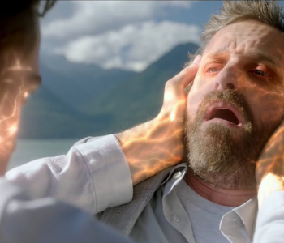